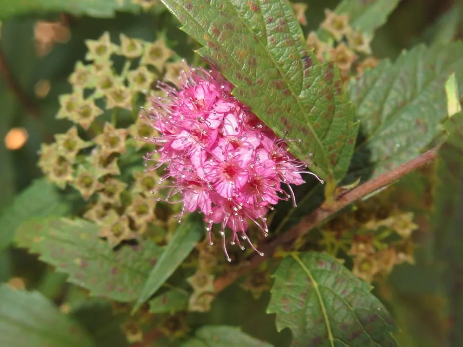

灌木与花木 · 植物界
金焰绣线菊 Spiraea × bumalda

蔷薇科落叶灌木，新叶红铜色，夏季开粉红色花序，色彩鲜艳、十分醒目，是园林中常见的彩叶观花灌木。
- 分类
- 门被子植物门纲木兰纲目蔷薇目科蔷薇科属绣线菊属
- 栖息环境
- 园林花境、路缘与水岸，喜光耐寒
- 地理分布
- 中国北方园林广泛栽培；为园艺杂交种
- 保护级别
- 暂无评估；栽培杂交种，未见野生居群
物种志
金焰绣线菊为蔷薇科绣线菊属落叶灌木，是白花绣线菊与日本绣线菊的杂交种，高 60–100 厘米，枝条细密。叶互生，卵形至卵状披针形，新叶红铜色至橙红色，后转绿色，边缘具锯齿。伞房花序顶生，花小，粉红色，花期 6–8 月；果实为蓇葖果，果期 8–9 月。
金焰绣线菊原产东亚，中国北方园林广泛栽培，喜光，也耐半阴，耐寒、耐旱，适宜疏松肥沃、排水良好的土壤。它新叶红铜色、夏季开粉红色花序，色彩鲜艳，是园林中常见的彩叶观花灌木，常成片种植于花境、路缘和水岸。栽培以扦插繁殖为主，花后修剪可促进新枝萌发、保持叶色鲜艳；光照不足时新叶颜色偏绿，观赏效果下降。
形态与习性
- 株高60–100 厘米，枝条细密
- 花期6–8 月，粉红色伞房花序
- 果期8–9 月，蓇葖果
- 叶色新叶红铜色至橙红色
- 光照喜光，光照足叶色更艳
- 水分耐旱，忌积水
- 主要用途彩叶观花、花境与路缘绿化
趣味知识
- 金焰绣线菊的新叶呈红铜色，像一簇簇小火苗，因此得名。
- 它是白花绣线菊与日本绣线菊的杂交种。
- 夏季开粉红色小花，与红铜色新叶相衬，色彩层次丰富。
- 花后修剪可促发新枝，让叶色更鲜艳。